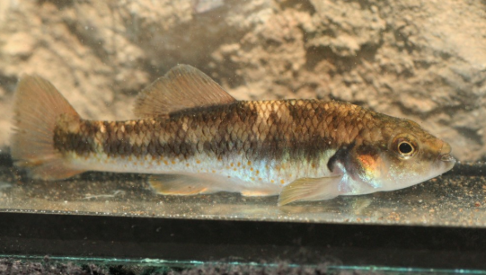

Systématique
- Ordre : Cyprinodontiformes
- Famille : Goodeidae
- Genre : Allodontichthys
- Espèce : A. hubbsi
- Auteur : Miller & Uyeno, 1980

Allodontichthys hubbsi est un goodeidé benthique rare, nommé en l'honneur du célèbre ichtyologiste Carl Leavitt Hubbs. C'est un poisson de petite taille, au corps fusiforme et robuste, adapté à la vie dans les courants rapides. Sa coloration est discrète, faite de teintes brun-clair à olivâtres, avec des marbrures sombres sur le dos et une série de points ou barres estompées sur les flancs.
Les femelles mesurent environ 6 à 7 cm, les mâles étant légèrement plus petits (5 à 6 cm). Comme les autres membres du genre, il possède des yeux situés assez haut sur la tête et une morphologie adaptée pour rester plaqué au substrat, limitant sa résistance au courant.
C'est une espèce benthique qui passe la majorité de son temps sur le fond de l'aquarium, souvent cachée sous des pierres ou des racines. Son comportement se rapproche de celui des gobies d'eau douce. Les mâles sont territoriaux et défendent activement leur périmètre contre les autres mâles, sans toutefois provoquer de blessures graves si le décor est bien agencé.
En raison de son habitat naturel (rapides), il nécessite une eau extrêmement bien oxygénée et un courant soutenu. Il est très sensible à la pollution organique et aux eaux stagnantes qui peuvent favoriser des maladies cutanées ou respiratoires. Un entretien régulier du substrat est indispensable.
Mode : Vivipare matrotrophe.
La reproduction est typique des Goodeinae : fécondation interne et nutrition embryonnaire via les trophotaeniae. La gestation dure environ 55 à 65 jours. Les portées sont très réduites, comptant généralement entre 5 et 12 alevins de grande taille à la naissance (environ 12-14 mm).
Les jeunes sont particulièrement robustes et se cachent immédiatement dans les interstices du substrat. Le taux de survie en bac spécifique est bon, car les adultes tendent à ignorer les alevins s'ils sont correctement nourris et si le bac offre des refuges rocheux.
Dimorphisme sexuel : Le mâle possède un andropode (modification de la nageoire anale). Il est plus petit et plus svelte que la femelle. En période de parade, ses nageoires peuvent s'assombrir légèrement. La femelle est plus corpulente, surtout lorsqu'elle porte des embryons.
Espérance de vie : 3 à 5 ans. Un hivernage à température réduite (16-18°C) favorise la longévité et la vigueur de l'espèce.
Allodontichthys hubbsi est endémique du haut bassin du Rio Coahuayana, spécifiquement dans le Rio Tuxpan et ses affluents, dans l'État de Jalisco au Mexique. On le trouve exclusivement dans les zones de "riffles" (rapides peu profonds) où le substrat est composé de rochers, galets et gravier.
L'eau y est fraîche, limpide et saturée en oxygène. Ce biotope est fragile et subit la pression de l'agriculture intensive et des rejets industriels locaux, ce qui a entraîné une forte réduction de ses effectifs sauvages.
Répartition

Origine naturelle :
- Mexique : État de Jalisco, bassin supérieur du Rio Coahuayana (Rio Tuxpan).
- Localité type : Rio Tuxpan, Jalisco, Mexique.
Statut UICN : En danger (Endangered). C'est l'un des Goodeids les plus localisés et les plus dépendants de la conservation en captivité.
Paramètres de maintenance
Température : 18 à 23 °C (Une bonne oxygénation est vitale).
pH : 7,0 à 8,0.
GH : 10 à 20 °dGH.
Courant : Fort à très fort (utilisation d'une pompe de brassage).
Volume conseillé : Minimum 80 L pour un groupe, avec une grande surface au sol.
Régime alimentaire
Régime : Insectivore benthique.
Il se nourrit de petites larves d'insectes et de crustacés trouvés entre les pierres. En aquarium, il accepte les nourritures congelées (vers de vase, artémias, mysis) et finit par s'habituer aux granulés tombant sur le fond. Une alimentation riche et variée est nécessaire pour compenser son métabolisme actif dû au courant.